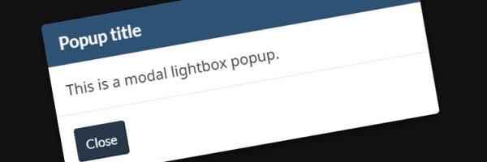

Images – Standard web pages – CRA web service manual
The right image helps capture attention, tells a story, and builds a cohesive brand. Choose images that:
- are clean and modern-looking
- capture attention and help tell a story
- reflect diversity and inclusivity
- are not clichés and are not overly staged
- are of high quality and high resolution
- come from Canadian sources, whenever possible
- are not sourced from a Google image search
On this page
- Determine if an image is needed
- How to use images
- Design options
- Complementary components and functions
Determine if an image is needed
Benefits
Simply, visual content reaches an individual's brain in a faster and more understandable way than textual information. Or, more accurately, a person's brain is hardwired to recognize and make sense of visual information more efficiently, which is useful considering that 90 percent of all information that comes to the brain is visual.
If you consider body language, traffic signs, maps, facial cues, advertisements, and the plethora of other forms of visual communication a person experiences everyday, it's not hard to see why our brains might have adapted to discern visual concepts easier. For example, 40 percent of nerve fibers to the brain are connected to the retina.
It also takes the brain longer to process text-based or verbal information, while the time it takes to process non-verbal, visual content is 0.25 seconds. Some sources even suggest that visuals are processed 60,000 times faster than text, which explains why we often find ourselves re-reading the same sentence eight times or staring at a page and realizing we have no idea what we've read.
It is believed that human communication has existed for over 30,000 years, but text-based communication has only been around for 3,700 years. So for the vast majority of human history, people have had to communicate without written word, meaning our brains had plenty of time to brush up on visual messages. Our brains became hard-wired to process visual data, including colors, which have been coded in our brains to represent certain messages or evoke specific emotions. Apparently, exposure to the color red increases pulse and breathing rates.
Caution
Handled poorly, the image + text challenge can result in a muddled mess in which neither the photo nor the words have the impact you're hoping for. The good news is that by following a few simple guidelines, you can achieve the best possible balance between creativity and clarity:
- The image you use will play as big a role in communicating your message as the text does, so don't settle for something that is "close enough." Instead, look for an image that matches the emotion and context of the text that will appear over it
- If you've slaved over the verbiage to distill your message into a succinct pitch or pithy explanation, you may be tempted to give it prominence by dropping it into the middle of the image. But this is often a mistake. Instead, consider the overall flow of the image: do your eyes gravitate to a certain area? Is the subject of the photo looking in a certain direction? Those can be great places in which to place the text
- You can also direct the reader's attention to the text by placing a frame around it, perhaps one that uses an interesting shape, or other graphical elements such as lines, dots, or arrows. "If your frame has a colored background," says Rebecca Swift, Director of Creative Planning, iStock by Getty Images, "try adding a bit of transparency. This allows you to see the background image through the frame, which can really pull the entire piece together."
- Your text needs to be legible, so try a lighter color over a dark image and vice verse. Using a complementary color, such as blue over a predominantly orange image, for example -- can also be a great strategy
- Finally, beware of the temptation to use big, heavy text. Sometimes the best way to get people's attention is to make the text lighter or thinner, because more of the image will be visible, yet a light, thin weight can provide enough contrast for the text to be very readable
How to use images
Quality
Correct use
- Images should be sharp, and details should be clearly visible. Images for print should be placed at 100% 300 dpi to ensure high-quality reproduction
- Use high-quality images

Incorrect use
- Images should never appear blurry or pixelated
- Do not use web (72 dpi) images for print

Illustration look and feel
Correct use
- Use only illustrations that are modern and crisp in design. The industry terms this style "flat" or "metro"
Simple image:

Complex image:

Incorrect use
- Do not use illustrations that appear dated: images that are saturated with gradients, glows, glossy, metallic, embossed, wet floor, 3D, and other over-decorated effects.
This can cause the user to question how current the content is. It reduces their trust and confidence in what they read. If the illustration appears dated, how can a user trust that the content is current and up-to-date?
Gradient, metallic, glossy image:

"Wet floor effct" refection:

3D, glossy image:

Photo look and feel
Correct use
- Use photos that are professional looking, in-focus, show engagement, and appropriately cropped


Incorrect use
- Do not use photos that are unprofessional looking, overly-staged, blurry, lacking in engagement, or cropped to create disembodied bodies with no heads


Shapes
Correct use
- Create or purchase images that have full-bleed colour and then modify the shape by using:
- CSS for webpage images
- Photo editing software for image use in paper and print mediums
This way, when the trend moves away from these shapes, it's possible to reset the image back to its original design
Correct default:
Correct + circle CSS:
Correct + rounded corners CSS:
Incorrect use
- Do not use images that are shaped into a circle or have rounded corners by default (image with shaped, white background)
Incorrect circular shaped image, no CSS:

Incorrect shaped image with round corners, no CSS:

Incorrect circular shaped image of a person, no CSS:

Casual tone
Correct use
- Use illustrations that have a casual or friendly appearance They can have a hand drawn look


Incorrect use
- Do not use illustrations that look like clip art, as they are dated in appearance.
This can cause the user to question how current the content is. It reduces their trust and confidence in what they read. If the illustration appears dated, how can a user trust that the content is current and up-to-date?


Association
Correct use
- Use images that accurately match the content they are associated with
News (correct image of a newspaper):

Incorrect use
- Do not use images don't accurately reflect the content they support
News (incorrect image of a book):

News (incorrect image of a letter "i"):

News (incorrect image of a cloud):

Reuse
Correct use
- Repurpose and apply an image to the same concept. If an existing image is associated to a specific topic or task, only reuse it in the same way
Image is in use to represent "Pension benefits":

Incorrect use
- Do not use an existing image and associate it with a different topic or task
Do not repurpose the "Pension benefits" image for the similar topic of "Retirement".
Diversity
Correct use
- Use images that reflect the diversity of the people at CRA (age, race, gender, ability)


Incorrect use
- Do not use images that showcase only one type of individual, or use generalized silhouettes. This is not a representation of CRA 's diversity


Clickable versus non-clickable
Correct use
- Make images look clickable if they are an actual link
- Make the image a link, apply the thumbnails and photo gallery (lightbox) solution, or add link text. That extra coding is what suggests the image is clickable
Correct − not clickable, doesn't look clickable:

Correct − clickable and looks clickable:
Correct − clickable with associated clickable text:
Added link textIncorrect use
- Do not use images that look clickable by design if they are not actual links.
Non-linked images should only support information, and not look like a clickable action is associated to it. Use CSS to suggest the image is clickable only when a hyperlink is part of the image
Incorrect − not clickable, but looks clickable with the grey border:
Incorrect − clickable, but design doesn't suggest it (no grey border):
Incorrect − not clickable, but the design suggests it is clickable:

White background colour
Correct use
- Use images with an irregular shape when there is a white background


Incorrect use
- Do not use images where the white background shapes an image into a circle, or gives it rounded corners. Use CSS to achieve the design treatment. Refer to shapes
White background turns the image into a circle:
White background rounds the image corners:
White background turns the image into a circle:
Language
Correct use
- Use images that contain text only if they are available in both English and French
English (correct text matches the French version):

French (correct text matches the English version):

Alternate solution
Use a text-free image and then overlay web content on top. This is an alternate solution to flattening text directly onto the image. On webpages, refer to: text over an image

Incorrect use
- Do not use a unilingual image for both the English and French pages. Do not favour one language use over another
Incorrect − the text "News" needs translating:

Incorrect − the date needs translation:

Incorrect − use only quotes in English, guillemet in French:

Supporting blog post
In this post, the Northwest Territories (NWT) share how they use illustrations to make COVID-19 web content and communications products more accessible to all their communities.
[21 October 2020]

Fonts and infographics
Correct use
- Font text can be merged onto an image. This is commonly done on infographics. On rare occasions, it is OK to add a few words to a supporting image
- Ensure fonts always match the tone and intent of the message. Refer to: Font − Content structure and presentation (external link)
- Present and group all information that a user expects together, including the necessary context. Infographic format often restricts the amount of information that can be included. This can lead to future creation of additional and dispersed content in many places. It makes the infographic just another resource the user has to consult to get all the information they need
- Ensure format and design of the document is easily understood, as well as easily modified, and updated. Play on words and smart infographics do not always translate well. They may not provide an equal experience in both official languages. Limited space of an infographic can limit the scope of information, or the quality of description provided
- Consider users' abilities when selecting the right format for a document with visuals. Many people are not used to infographics and may not have the skills to interpret the diagrams. Some may find it hard to know where to focus, or how to determine the main message. This results in confusion and limited uptake.
Typically fonts give a feeling of professionalism and are respectful that the content is corporate in nature:


Exception − only use a comic font on casual tone images:

Incorrect use
- Do not add font text simply because the default HTML font is too basic, and there is a desire to "liven up" the image. If the image is not an infographic, only include a few key words
- Do not include tag lines or secondary text.
- Do not trap meaningful/primary textual information in images or PDFs:
- It is difficult for users as these formats do not support full-text search, and trapped textual information can be hard to read or limited in utility
- It is unsustainable for the organization as content cannot be reused
- It is bad for your business area as it restricts your reach and influence in delivering messaging authoritatively
Incorrect − infographic uses a comic font. Although there are casual tone images, they support the main central image that is a conventional, non-casual tone illustration:

Montages
Correct use
- If a montage is required, use a simple grid with white releases between images. Photo treatments, such as duotone or colour overlays, should be avoided

Incorrect use
- Do not create montages by blending images together. Choose one strong image if possible. Do not use other large graphics or icons on top of photos

To meet accessibility requirements, always provide text alternatives (alt text) for all non-text content, such as images, so that it can change into other forms people that need. Some examples include large print, braille, speech, symbols or simpler language. When providing alt text, follow these principles:
- Alt text should describe the image and except for rare occasions, must not exceed 125 characters (including spaces)
- For complex images, or images that require more than 125 characters, do the following:
- Provide a simple text statement as the alt value
- Provide a more detailed text description, coded immediately before or after the image
This ensures that all users have access to a plain description of the image, supports different learning styles and meets accessibility requirements. The content must fully describe the image for the non-visual users that use text-to-speech software. Non-visual users require the same experience as visual users, and need to understand all information without any associated images.
Users pay close attention to photos and other images that contain relevant information but ignore fluffy pictures used to "jazz up" Web pages.
Good images explain a concept, conjure a feeling, convey information, and enhance people's overall experience on a site. Bad images waste space, are ignored by users, and, even worse, are confusing.
Depending on the context and types of images, people look at less than half of the images presented to them on average—only 42 percent. And in general, they look at those images for less than two-tenths of a second. People ignore more images than they look at on the Web, and they look at images for just a fraction of a second.
Designers should beware of using images that accompany text but don't do anything to enhance it. We believe that these images should not be on a page. They are a waste of pixels, of the designer's work, and of users' time.
Users look at images that are related to content about twice as often—29 percent of the time.
Design options
Image shape
Appearance

HTML code
<img src="image_source" class="img-roundedimg-circleimg-thumbnail" alt="image description" />
Prototyping libraries
The following prototyping libraries are currently being developed and will be available to download once the CRA web service manual is officially launched:
- Axure library
- Figma UI kit
Correct use
- Use these styles to easily modify the shape of an image without the use of editing software. Refer to shapes
- Use the styles consistently within a site
- Use thumbnails only with hyperlinked images, as the border on it suggests it is a link. Refer to thumbnail tiles
Incorrect use
- Do not use preshaped images; only style images with CSS
Image size
Appearance
Bigger image

Smaller image

HTML code
<img src="image_source" class="img-responsive full-width" alt="image description" />
Coding considerations:
- With responsive images,
max-width: 100%;andheight: auto;are auto-applied with the use of.img-responsive
Prototyping libraries
The following prototyping libraries are currently being developed and will be available to download once the CRA web service manual is officially launched:
- Axure library
- Figma UI kit
Correct use
- Use to make larger and smaller images scale properly to the width of the container
- Check images in different resolutions, as images may be too wide for a container in some viewports, but not others
- Ensure images have responsive behavior, and never become larger than their parent container
- Use full-width to stretch a smaller image to the width of the container and fill the available space
- Ensure images are clear and easy to see in larger resolutions. Refer to quality
Incorrect use
- Do not apply to images that become blurred, overstretched or pixelated in the different resolutions. Use a proper image
Center aligned block
Use to centre the block as a whole, including the text. Center block takes a fixed width element, such as an image, and applies an equal left and right margin, thus centering the content. Avoid unless it adds value to the content.
Appearance
This image is centered.
HTML code
<img class="center-block" alt="image description" src="image_source" />
Prototyping libraries
The following prototyping libraries are currently being developed and will be available to download once the CRA web service manual is officially launched:
- Axure library
- Figma UI kit
Text over an image
Use to control the position of text over an image. The browser always positions the text on the top left. To modify the default placement, both the vertical (top and bottom) and horizontal (left and right) positions must be defined. Since both horizontal and vertical positions work together, the posting is responsive. When the grid system linearizes for smaller viewports, so does the positioning.
| Viewport | Top positioning | Bottom positioning | Left positioning | Right positioning |
|---|---|---|---|---|
| All devices (always positioned) | pstn-tp-xs |
pstn-bttm-xs |
pstn-lft-xs |
pstn-rght-xs |
Tablets (upwards only) | pstn-tp-sm |
pstn-bttm-sm |
pstn-lft-sm |
pstn-rght-sm |
| Small desktops (upwards only) | pstn-tp-md |
pstn-bttm-md |
pstn-lft-md |
pstn-rght-md |
| Large desktops (upwards only) | pstn-tp-lg |
pstn-bttm-lg |
pstn-lft-lg |
pstn-rght-lg |
Appearance
HTML code
<div class="row">
<div class="col-xs-12">
<a href="#">
<img src="..." class="img-responsive full-width" alt="...">
<p class="well brdr-rds-0 well-sm opct-90 pstn-tp-xs pstn-bttm-xs pstn-lft-xs pstn-rght-xs">Link on top of image</p>
</a>
</div>
</div>
Coding considerations:
- Use any CSS property other than
.staticwith the layer that's to appear behind the absolute positioned object. For example, grids have a CSS property ofposition: relative, so they work well with this design component
Prototyping libraries
The following prototyping libraries are currently being developed and will be available to download once the CRA web service manual is officially launched:
- Axure library
- Figma UI kit
Correct use
- Use to overlay text over an image
- Ensure the image and text relate to each other
Incorrect use
- Do not overlay text over text
- Do not overlay text over an image so that the image is no longer visible
Thumbnail tiles
Use to add any kind of content like headings, paragraphs, or buttons into a thumbnail, to create a thumbnail tile effect.
HTML code
<figure class="thumbnail">
<a href=""><img src="image_source" alt="image description"></a>
<figcaption class="caption">
<h4>Title (caption) </h4>
<p>Content</p>
<ul class="list-inline">
<li><a href="" class="btn btn-primary" role="button">Button</a></li>
<li><a href="" class="btn btn-default" role="button">Button</a></li>
</ul>
</figcaption>
</figure>
Coding considerations:
- Place the content within a
<figure>tag - Style with
.thumbnail - Use a styled caption
<figcaption class="caption">
Prototyping libraries
The following prototyping libraries are currently being developed and will be available to download once the CRA web service manual is officially launched:
- Axure library
- Figma UI kit
Correct use
- Use to create a tile of content that includes a featured image
- Apply only to hyperlinked images, as the border on it suggests it is a link
Incorrect use
- Do not apply to images that are not hyperlinked
Media objects
Use to layer text and images for media content like blog comments, tweets, and so forth.
Appearance

Media heading
Media description...
HTML code
<!-- List of media objects -->
<ul class="media-list">
<li class="media"> <a class="pull-right" href="#"><img class="media-object" src="image_source" alt="image description"></a>
<div class="media-body">
<h5 class="media-heading">Media heading</h5>
<p>Media description...</p>
</div>
</li>
<li class="media"> <a class="pull-right" href="#"> <img class="media-object" src="image_source" alt="image description"> </a>
<div class="media-body">
<h5 class="media-heading">Media heading</h5>
<p>Media description...</p>
</div>
</li>
</ul>Prototyping libraries
The following prototyping libraries are currently being developed and will be available to download once the CRA web service manual is officially launched:
- Axure library
- Figma UI kit
Correct use
- Ensure the image hyperlinks to the media source
Incorrect use
- Do not use for anything other than media-related content
Image galleries
Please refer to popups.
Complementary components and functions
-
